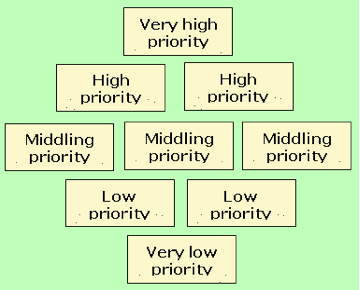
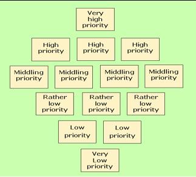

vol. 14 no. 4, December, 2009
vol. 14 no. 4, December, 2009 | ||||
The research-practice gap is a widely experienced phenomenon in a number of fields of professional activity, including not only librarianship but also education (e.g., Carnine 1997), social work (e.g., Henderson et al. 2006) and nursing (e.g., Mulhall 2001). The problem, if it is perceived as such, seems to be the result of the gradual divorce of practice from training for the profession. Most of these fields have evolved from apprenticeship systems, through training (often directed by professional bodies), to the establishment of degree programmes, research and doctoral studies. In the process, the norms of practice are replaced by the norms of the academy and the split becomes institutionalised.
In librarianship, as long ago as 1984 Blick presented an almost confrontational view of the problem and since then the subject has been addressed in a variety of ways (e.g., Haddow and Klobas 2004; McClure 1989; Mancall et al. 1982). Powell et al. (2002) investigated the involvement in research of American and Canadian librarians and the extent of use of research results in their practice and discovered that though many regard research literature as irrelevant to their jobs, a significant majority reads research literature and conducts research themselves. There is also a range of studies looking for the ways to close the gap. McKechnie et al. (2008) investigate how information seeking research community communicates its findings to the practicing librarians and information specialists. Interest in the subject is growing, as witnessed by the establishment of the journal Evidence Based Library and Information Practice.
Library and information science research has developed in Sweden mainly over the last decade. It is young in comparison with other countries, but, as elsewhere, discussions about the applicability of research results in the professional practice are intense. The University of Borås, the largest library and information research institution in Sweden, has organized regular meetings between professional librarians and researchers to highlight issues of communication between these two groups for several years. The participants of these meetings have emphasised the need for more meeting spaces, communication channels for better information dissemination, ways to identify the most relevant research issues for practice, and the need to find funding sources for research (Högskolan i Borås 2007).
We have conducted a project that aimed to address the issue by bringing Swedish library practitioners and researchers into a common project using the Delphi technique. The aim was to determine the areas of research that would provide the evidence for future action and to establish the priorities among these research areas.
The project was directed towards all Swedish libraries without regard to their type, community served, region, etc. However, we were aware that the differences between library sectors defined as library systems comprised of one library type might be very significant. Special libraries serve the needs of a clearly defined group of users, while public libraries address heterogeneous communities. Academic and school libraries exist in the educational sector, but the age and interests of their readers may be worlds apart, not to speak of the parent organizations' goals and environment. Therefore, our research questions anticipated that there would be differences in the research interests of librarians from the different sectors:
The Delphi method resulted from work at the RAND Corporation during the 1950s and 1960s and was designed as a forecasting technique. The intention was to attempt to forecast the effect of new technologies on the conduct of war, but the method was quickly adapted to other areas and to a variety of decision-making purposes.
Dalkey (1969) defined the method in a RAND Corporation report:
The Delphi technique is a method of eliciting and refining group judgements... The procedures have three features: (1) Anonymous response-opinions of members of the group are obtained by formal questionnaire. (2) Iteration and controlled feedback- interaction is effected by a systematic exercise conducted in several iterations, with carefully controlled feedback between rounds. (3) Statistical group response-the group opinion is defined as an appropriate aggregate of individual opinions on the final round. These features are designed to minimize the biasing effects of dominant individuals, of irrelevant communications, and of group pressure towards conformity.
Dalkey noted that the rationale for the method was the notion that 'two heads are better than one', and we might note that the method generally involves rather more than two heads.
The strength of the method, with its anonymous responses and multiple rounds, is the possibility to elicit ideas and opinions from persons experienced in a particular field, to allow these individuals to learn about each others' ideas and to develop consensus and understanding of the priorities and strong differences. Both researchers and experts are assumed to modify their initial impressions in this process.
Following its development at RAND, the method was not without its critics. For example, Sackman (1974), also from RAND, suggested that the method should not be employed until it was more scientifically grounded. In spite of criticisms, however, the method continued to be developed and applied in a variety of fields.
Delphi studies in librarianship and information science have been used for a variety of purposes. Some early investigations are now of only historic interest, since the forecast period has passed or because the issues discussed have become less salient.
The Delphi technique has been used for a variety of managerial purposes in libraries, e.g., in quite an early study Pierce and Andrew used the method 'to obtain consensus between librarians, faculty and administrators on a set of objectives for a university library's resource allocations…' (1984: 35). Ludwig and Starr (2005) explored the future of the library as a place, with 'An expert panel of health sciences librarians, building consultants, architects, and information technologists…' (315). In another study, Cole and Harer (2005) identified aspects of quality measures for academic library services. Howze and Dalrymple (2004) used the Delphi method to determine the content of an information literacy programme and, in a related area, Green (2000) employed the method to select Web sites appropriate to adult learners in the field of business studies. Recently, a re-organization of the Institute of Library Science at Humboldt University in Berlin was based on the Delphi study involving an international group of expert opinions (Jänsch et al. 2005).
Forecasts of possible futures have also been produced: for example, Feret and Marcinek (2005), in a follow-up to an investigation carried out in 1999, polled thirty-six experts in twenty countries on the future of the academic library and the academic librarian. Research issues were not covered in the study, but the areas of concern identified are suggestive of research possibilities: for example, the role of the library in the overall university infrastructure, the role of co-operation in the digital age, changes in the required competencies of library staff, and so on. Forecasts have also been limited to specific countries, such as the investigation carried out by Baruchson-Arbib and Bronstein (2002), which surveyed views of the future of the library and information profession in Israel. This study also identified areas relevant to the investigation reported here: changing professional competencies, the varying roles of traditional and virtual libraries and the impact of the user-centred approach to service. Petuchovaitė (2004) investigated the development priorities in public librarianship in Lithuania. Potential research directions also may be derived from her results. An early study in Sweden (Statskontoret 1971) explored possible developments in a variety of information functions, the early date, however, means that the projections to the mid-1980s are no longer of great interest. A later Finnish study (Koskiala and Huhtanen 1989) forecast developments in information technology use for 1996 and 2010. A number of the forecasts for 2010 ring true in 2008: for example, the proposition that, by 2010, 90% of scientific and technical information will be in electronic form and that small circulation journals will be electronic only. The method used in this study was to bring together thirty-two Finnish experts in two consecutive sessions and to supplement their views with those of eleven foreign experts.
The technique has also been used in other fields to determine research needs, for example, Kirkwood et al. (2003) employed it in determining research needs in a UK National Health Service hospital. The authors note that the method proved useful and it is interesting to see that at least three research areas could well be replicated in libraries, i.e., recruitment and retention of staff, staff stress and morale, and staff training and education.
A recently published study by Eldredge et al. (2009) uses the Delphi method in establishing a research agenda for the Medical Library Association. As a result of the Delphi process a list of top twelve research questions was derived. The questions are formulated in such a way as to be suitable for immediate investigation. In this way, the authors provide a research agenda suitable for the implementation of the research policy of the Association.
This review of previous Delphi studies in librarianship shows that most are directed at the solution of pressing problems or determining the development directions of a variety of institutions (different kinds of libraries, specialised library sectors, library and information science education departments, etc.). It is one of a few techniques available for seeking consensus and other methods generally involve face-to-face group activity. The close involvement of the professionals as panel members in these studies provides valid outcomes and forms a basis for further research and the Delphi method .
The review suggests that the Delphi method is very suitable for conducting a project, which has not only to produce solid research results, but must also build the trust of the professional communities, which are in the position of using these results directly in their activities. As in many other cases, in this study the Delphi method was adapted to suit its purpose. The aim was not only to reach consensus, but also to highlight the differences of research interests among library sectors. Consequently, special attention was paid to the selection of panel members and in formulating the research issues for evaluation. The panel members participated in two survey rounds assessing the importance of the research issues presented to them. Finally, a group of panel members was invited to a workshop to achieve the final result, the identification of the top research priorities for Swedish librarianship as a whole.
Most Delphi studies, as Howze and Dalrymple (2004) note, use a panel of experts dispersed over large areas or bring together those with different backgrounds and perspectives. Their own project was directed in one organization to reach a consensus among a relatively homogenous group of participants. It also aimed to solve a 'real-life library problem' (p. 3). Our study brings together a group of the library professionals from different types of libraries in Sweden. The group is dispersed geographically over the whole of Sweden and to some extent their location was taken into account to represent regional aspects of libraries. Their background is homogenous in respect that they are all acknowledged authorities in the professional field, but they were deliberately chosen from different types of libraries as we expected that the contextual, functional and structural differences of libraries would influence research priorities. Swedish librarians nominated the panel members after we sent a call through the channels of professional communication. Thus, we ensured that the panel members were perceived as experts by their peers.
Initially 125 librarians were invited to participate, equally distributed over the different library sectors, and ultimately we formed a panel of ninety-seven members who had accepted the invitation, distributed over the different sectors as follows:
It may seem that the balance in the panel is shifted to the side of public libraries as county and regional and public libraries are represented by thirty-three experts. However, in the Swedish library system, county and regional librarians fulfil advisory and strategic development functions in the region and do not manage physical libraries. Their role in the system is quite specific. Nevertheless, we employed means allowing us to avoid any bias in further stages of investigation.
The help of librarians was also enlisted in formulating the research issues for the questionnaire. The practicing professional and researchers may understand research and research questions differently; however, in this project, the aim was to represent the point of view of working professionals, not the researchers. Therefore, we sought to identify issues of concern to professionals rather than identify very specific, immediately researchable questions.
Approximately 150 research issues were received from all library and information sectors. In addition, the list was enhanced by scanning a variety of sources: discussion lists on library and information matters (e.g., BIBLIST in Sweden, LITA-L, ACRL-FRM and CENTRALHEADS in the USA and LIS-LINK in the UK), Swedish, Danish, English, German and French professional journals (e.g., Biblioteksbladet, Bok og Bibliotek, Scandinavian Public Library Quarterly, Library + Information Update, Library Journal, Information Outlook, School Library Media Research, Bibliothek Forschung und Praxis, Bulletin des bibliothèques de France and others). As a result the initial list consisted of 200 items.
The next step was to reduce this list to manageable proportions by scanning it, identifying eight broad thematic areas and then grouping the ideas into cognate categories. Wilson's (2001) Venn diagram (see Fig. 1), which shows the connections between elements that define the scope of librarianship, was employed for this purpose. Each category was then reviewed with a view to identifying a researchable theme that would cover all, or a number of, the items. Seemingly similar topics may appear in several areas covering specific research aspects of a complex issue.
The eight broad thematic areas were:
Allocation of the areas in the Venn diagram is conditional. It is assumed that the blue area refers to a library as an organization; therefore all library-related issues are situated within the blue-lined area, although, in fact, in many cases they will also be found outside it.
As a result, sixty-four research topics formed out of 200 smaller research questions were distributed across eight broad research areas. Swedish translations of the research topics, including the exemplifying research questions, were refined during several pre-testing exercises with the librarians and library researchers acting as advisors to the research team. The full list of sixty-four themes can be found in the Appendix.
The first round questionnaire was distributed to the panel members by e-mail on the 16th April 2008. The panel members were asked to rank the significance of each of the sixty-four research topics on the scale of 1 to 10 (least important to most important) and to return their completed responses either by e-mail or by ordinary mail by May 8. On May 6 an e-mail message was sent to all panel members reminding them of the due date for return. This resulted in further returns and some apologies for having to withdraw from the panel because of illness or unexpected work pressures.
Seventy-eight responses were received by the final due date, a response rate of 80% of the original panel, or of 86% when the six withdrawals were taken into account. Given how the panel was chosen and their prior agreement to participate, we had hoped for a 100% response rate; however, the achieved rate is very satisfactory for a study of this kind. The responses were distributed over the different sectors as follows:
The top twenty topics, shown by overall rank, with the associated rank in each sector are shown in Table 1.
| Research topic | Sectoral ranks | |||||
|---|---|---|---|---|---|---|
| All | Regional | Public | Academic | School | Special | |
| 7.2: Libraries in education | 1 | 4 | 6 | 3 | 2 | 22 |
| 1.4: Changing roles of libraries | 2 | 2 | 11 | 15 | 7 | 4 |
| 3.7: Impact of the library programmes on learning | 3 | 6 | 4 | 9 | 5 | 20 |
| 5.12: Evaluation of library work | 4 | 7 | 5 | 12 | 12 | 6 |
| 3.8: Guidelines for information literacy programmes | 5 | 20 | 35 | 4 | 2 | 8 |
| 3.9: Children and libraries | 6 | 3 | 2 | 26 | 7 | 42 |
| 6.5: Librarian and education | 7 | 11 | 27 | 5 | 1 | 29 |
| 3.2: Library as a creative space | 8 | 1 | 7 | 31 | 11 | 40 |
| 7.9: Evaluation of services | 9 | 18 | 11 | 7 | 17 | 8 |
| 3.6: Reading research | 10 | 9 | 3 | 40 | 4 | 44 |
| 3.3: Marketing library and information services | 11 | 5 | 9 | 35 | 21 | 10 |
| 1.5: Economic significance of libraries | 12 | 35 | 8 | 9 | 24 | 3 |
| 1.8: Scholarly communication | 13 | 46 | 41 | 1 | 27 | 2 |
| 3.1: Implication of user studies | 14 | 8 | 10 | 8 | 39 | 23 |
| 3.5: Impact of the promotion of reading | 15 | 13 | 1 | 33 | 9 | 53 |
| 5.5: Library integration | 16 | 21 | 16 | 35 | 6 | 25 |
| 3.4: Reference service in the digital age | 17 | 18 | 11 | 19 | 14 | 29 |
| 7.6: Impact of digitisation projects | 18 | 29 | 20 | 6 | 43 | 5 |
| 7.8: Impact of digital services | 19 | 25 | 16 | 13 | 39 | 17 |
| 7.1: Strategic development of new services | 20 | 10 | 16 | 22 | 29 | 34 |
| Percentage of top 20 topics shared | 75 | 85 | 65 | 65 | 50 | |
| The topic numbers identify the sequence in the questionnaire: they were retained throughout the study. | ||||||
In Table 1, the cells coloured pale green identify the topics within each sector that were shared in the top twenty topics. It will be noted that special librarians identified only 50% of the topics in their top twenty, with academic and school libraries having the next lowest agreement at 65%.
A Spearman rank correlation test was carried out and, although the significance levels cannot be used, because of the non-random selection of panel members, the results show quite high levels of agreement between Regional, Public and School ranks and between Academic and Special library ranks.
| Regional | Public | School | Special | Overall | |
|---|---|---|---|---|---|
| Academic | 0.440 | 0.524 | 0.489 | 0.696 | 0.746 |
| Regional | 0.893 | 0.707 | 0.320 | 0.84 | |
| Public | 0.723 | 0.419 | 0.892 | ||
| School | 0.403 | 0.896 | |||
| Special | 0.629 |
Table 1 above shows that the highest overall ranks were attributed to the research issues relating library work to education. The research on assessing the library role and work is also placed high on the agenda in the first survey round. Library services and some economic issues have also attracted attention as priority research areas.
On the other hand the topics related to library as a profession and a number technology related topics were ranked very low (see Table 3)
| Research topic | Sectoral ranks | |||||
|---|---|---|---|---|---|---|
| All | Regional | Public | Academic | School | Special | |
| 6.2:Librarianship as a profession | 55 | 53 | 45 | 47 | 49 | 57 |
| 1.7:European Space | 56 | 61 | 51 | 53 | 55 | 52 |
| 6.7:Human resource management | 57 | 56 | 53 | 49 | 58 | 59 |
| 4.8:Virtual reality | 58 | 49 | 55 | 55 | 64 | 58 |
| 6.3:Job satisfaction and identity | 59 | 57 | 58 | 61 | 62 | 63 |
| 2.5:Digitization projects in Sweden | 60 | 63 | 63 | 58 | 61 | 55 |
| 1.1:Historical development of libraries | 61 | 60 | 62 | 60 | 57 | 61 |
| 4.6:Implementing wireless networks | 62 | 58 | 64 | 61 | 59 | 61 |
| 6.1:Public image of librarians | 63 | 61 | 60 | 64 | 63 | 60 |
| 6.4:Role of professional associations | 64 | 64 | 61 | 63 | 59 | 63 |
The bottom of the table also shows more agreement between the panel members from different library sectors about low priority of the issues.
The second round questionnaire was composed of forty-two research topics, which were selected using the rankings from the first round. This decision was prompted by the fact that during the first round the participants achieved almost unanimous consensus on the items of very low priority. Only the top twenty items from each library sector were selected. This allowed an equal representation of the interests of each sector in the second round questionnaire.
The selected items were listed in one sequence according to their numbers of the first questionnaire, without the division into the sub-sectors used in the first round. The panel members were again asked to score the priority of each item, but were provided with information on how the topic had been ranked in the first round. They were also asked to indicate what priority they believed the topic would have five years from now. The form of the questions is shown in the example (Fig. 2).
The amount of work involved in responding to the Delphi questionnaire during the first round proved to be somewhat overwhelming for several respondents and we received some requests to take some names out of our list. Thus, ninety-two questionnaires were sent out during the second round at the end of August 2008. Four messages were returned, as delivery to the indicated addresses failed. One person was unable to answer. The overall response rate after two reminders by the end of September was 70%. Across the sectors the response rates were as follows:
As noted above, panel members were asked to rate the importance of topics for the present and for five years in the future. Given our interest in policy for the future of libraries, we report here the results of the ranking for the future significance of investigations (Table 4).
| Topic | Ranks based on future significance | |||||
|---|---|---|---|---|---|---|
| All | Regional | Public | Academic | School | Special | |
| 3.7: Impact of the library programmes on learning | 1 | 3.5 | 5 | 3 | 1.5 | 14.5 |
| 1.4: Changing roles of libraries | 2 | 1 | 1 | 19 | 1.5 | 12.5 |
| 7.2: Libraries in education | 3 | 9.5 | 10 | 11.5 | 4 | 11 |
| 5.12: Evaluation of library work | 4 | 13.5 | 5 | 7 | 12 | 17 |
| 3.9: Children and libraries | 5 | 2 | 2 | 34 | 5 | 25.5 |
| 3.3: Marketing library and information services | 6 | 11.5 | 3 | 26 | 12 | 7 |
| 3.5: Impact of the promotion of reading | 7 | 5.5 | 5 | 25 | 6 | 33 |
| 3.1: Implication of user studies | 8 | 7.5 | 7.5 | 15 | 33 | 12.5 |
| 6.5: Librarian and education | 9 | 20.5 | 21.5 | 4 | 3 | 35.5 |
| 7.6: Impact of digitisation projects | 10 | 24.5 | 16.5 | 5 | 24 | 3.5 |
| 7.1: Strategic development of new services | 11 | 3.5 | 7.5 | 21.5 | 31.5 | 19 |
| 2.4: Digital resources management | 12 | 29 | 24.5 | 7 | 16.5 | 1 |
| 1.5: Economic significance of libraries | 13 | 30.5 | 13 | 7 | 16.5 | 16 |
| 7.4: Web 2.0 applications in libraries | 14 | 13.5 | 11 | 15 | 22 | 31 |
| 5.4: Library co-operation with other institutions | 15 | 9.5 | 26.5 | 23 | 14 | 19 |
| 3.4: Reference service in the digital age | 16 | 17.5 | 14.5 | 17.5 | 20 | 21 |
| 4.1: Developing search/retrieval systems | 17 | 23 | 24.5 | 15 | 19 | 9 |
| 3.2: Library as a creative space | 18 | 5.5 | 9 | 29.5 | 16.5 | 38 |
| 7.9: Evaluation of services | 19 | 20.5 | 21.5 | 16 | 25 | 19 |
| 5.2: Strategic planning of library services | 20 | 26 | 16.5 | 20 | 38 | 7 |
| Percentage of top 20 topics shared | 65 | 75 | 70 | 70 | 70 | |
The table shows that regional and public librarians shared fewer topics with the overall top twenty, while academic, school and special librarians shared more. The range in the first survey was from 50% to 85%, while in the second round it was 65% to 75%. The shift in special librarians' judgements from 50% agreement with the top 20% to 70% agreement is particularly noteworthy. It suggests that, in thinking about the future, their judgements were closer to their colleagues in other sectors.
Five topics were new to the top twenty: these were, Digital resources management (ranked 30 in the first round), Web 2.0 applications in libraries (21), Library co-operation with other institutions (31), Developing search/retrieval systems (36) and Strategic planning of library services (29). Interestingly, three of these five new topics were technology-related: as noted early such topics were generally ranked lowly in the first round survey.
The main issues that have risen in the top twenty list were, Marketing library and information services (from 11th to 6th), Impact of the promotion of reading (15th to 7th) Implication of user studies (14th to 8th) Impact of digitisation projects (18th to 10th) and Strategic development of new services (20th to 11th). The implication here appears to be that panel members were giving future priority to research areas with strategic implications, something that emerged in the workshop, as explained below.
There were also two issues that have fallen but that have remained in the top twenty: The library as creative space, which fell from 8th to 18th position and Evaluation of services, which fell from 9th to 19th. The main 'fallers', however, were those that dropped out of the top twenty altogether. These were, Developments in scholarly communication, Reading research, Guidelines for information literacy programmes, Library integration and collaboration and The impact of digital services. These topics, however, are still fairly highly ranked; all are in the top thirty topics.
The results revealed some differences between the present and future significance of research issues. Some issues change their position in the list as the topics are perceived as somewhat more significant for the future research, e.g., Marketing library and information resources becomes 6 (future) instead of 9 (present); Strategic development of new services – 11 instead of 14; Economic significance of libraries – 13 instead of 15; Implications of user studies – 8 instead of 12; etc. The others are ranked a little lower for the future: Librarian and education – 9 instead of 6; Web 2.0 application in libraries – 14 instead of 10; Library as creative space – 18 instead of 13, Reference service in the digital age – 16 instead of 7, etc.
The issues Guidelines for information literacy programmes, Design of library Websites and Digital media in research disappear from the top twenty priorities for the future (though the latter falls only to the 21st position) and three new issues are included: Impact of digitization projects (10 instead of 21); Evaluation of services, and Strategic planning in libraries.
The final stage of the study was to organize a workshop with participation from the different sectors. This modification is usual for many Delphi studies (de Meyrick 2003). The workshop was introduced into the Delphi process as an interactive element of face-to-face negotiations for seeking consensus following the recommendations of de Loe (1995). According to Loe, when there is no pressure to seek consensus the need to critically evaluate the suggestions diminishes.
The Workshop took place in Gothenburg on 21st November 2008, with sixteen participants.
It was evident from the two rounds of surveys that the dominant factor in assessing the priority of the research topics was the library sector within which the panel member worked. Consequently, when it came to devising the workshop, we decided to recognize the differences when drawing up the list of topics to be reviewed.
We began by selecting those topics that appeared in the top ten topics of at least two sectors in the rankings of both current significance and future significance. This resulted in 13 topics and a 14th was added by the inclusion of Selling the library, which was the only other topic to occur in the top ten of both sets of ranks. The fourteen topics are shown in Table 4.
| Research area | Found in 'top tens' of these sectors | ||||
|---|---|---|---|---|---|
| Regional | Public | Academic | School | Special | |
| 1.4 The changing roles of libraries in their communities | |||||
| 1.8 Developments in scholarly communication | |||||
| 2.3 The role of new digital media in scholarship and research | |||||
| 2.4 Digital resources and their management | |||||
| 3.2 Developing the library as a creative space | |||||
| 3.3 'Selling the library': marketing library and information services to different user groups. | |||||
| 3.5 The impact on library users of activities for the promotion of reading and literature | |||||
| 3.7 The impact of the library programmes on learning and transferable skills | |||||
| 3.8 Guidelines for the development of information literacy programmes in libraries of all types. | |||||
| 3.9 Children and libraries in the digital age. | |||||
| 5.12 Evaluation of library work effectiveness and impact | |||||
| 6.5 The librarian and education: the library's role in the educational process and its implications for collaboration between teachers and librarians. | |||||
| 7.1 Factors affecting strategic development | |||||
| 7.2 Libraries, learning and education: studying the impact of library and information | |||||
The workshop participants were divided into four groups in such a way that people from different sectors worked together. Each group was presented with a set of cards bearing the expanded version of the topic areas listed above. They were asked to arrange the cards in order of priority using the 'Diamond nine' technique (expanded to cope with fourteen items). Figure 3 shows the layout, indicating that the groups had to decide upon an order of priority for each item from 'Very high priority' to 'Very low priority'.
|  |  |
In a second round, the four groups were combined into two and were asked to reach agreement on priorities, using the same technique.
Finally, in the feedback session, the two groups reported their priority judgements and stated their arguments for the choice of the 'Very high priority' item. The priority judgements were given scores from 5 for Very high priority to 1 for Very low priority and the scores summed to provide a final priority order for the top ten items. The result is shown in Table 6.
| Potential research area | Group scores | Total score |
|---|---|---|
| 7.1: Factors affecting strategic development | 5 & 4 | 9 |
| 3.7: The impact of the library programmes on learning and transferable skills. | 4 & 3 | 7 |
| 3.9: Children and libraries in the digital age. | 3 & 4 | 7 |
| 1.4: The changing roles of libraries in their communities | 2 & 5 | 7 |
| 3.5: The impact on library users of activities for the promotion of reading and literature | 3 & 3 | 6 |
| 5.12: Evaluation of library work effectiveness and impact | 3 & 3 | 6 |
| 1.8: Developments in scholarly communication | 3 & 2 | 5 |
| 3.2: Developing the library as a creative space | 4 & 1 | 5 |
| 7.2: Libraries, learning and education: studying the impact of library and information services | 2 & 2 | 4 |
| 2.3: The role of new digital media in scholarship and research | 1 & 3 | 4 |
Where scores are tied, the items have been ranked according to the degree of agreement between the groups, thus, Children and libraries in the digital age appears in fourth position because the two preceding topics show closer agreement between the groups.
The first round questionnaire survey revealed both a degree of consensus on the significance of the research themes listed and differences in perceived needs in the different library sectors (i.e., regional, public, academic, school and special libraries). The most surprising result, from the investigators' point of view, was the low ranking given to professional issues topics, for example Librarianship as a profession (ranked 55), Job satisfaction and identity (59), Public image of librarians (63) and the Role of professional associations (64). Such matters are discussed in the professional journals, and at conferences in Sweden (e.g., DIK Forum, Biblioteksbladet, Mötesplats inför framtiden) and books are published on these issues (e.g., the latest one being Häggström et al. 2008) and, consequently, it was surprising to find them ranked so low.
Equally surprising was the low ranking of most technology-related topics, given their prominence in the professional discourse in many countries. For example, Evaluation of digital library software (ranked 46), Implications of new technology (51), Virtual reality (58) and Implementing wireless networks (62). There was some variation by sector in this regard, but overall, the topics ranked low.
It is clear that the second round survey did not bring about any further consensus among the respondents, especially when thinking about future priorities. The differences between the libraries remained.
Table 7 shows that special libraries sector shares with other sectors only half of its top ten priorities, while public libraries have most in common with others. Academic libraries have only one topic that is not among the top ten of others (Economic significance of libraries).
The very process of selecting items for inclusion in the workshop, for example, meant that some topics ranked within the top ten of a sector, could not be included in the final list of fourteen topics. Thus, Economic significance of libraries, which was in the top ten of the Academic librarians' priorities, was not shared with any other sector and, consequently, did not get into the final list. Table 8 below shows the topics that were excluded in this way and their position in the sector's top ten. Note that no such topics existed for Public libraries, as all of the top ten of that sector were included in the final fourteen.
| Topic | Position in top ten ranks | |||
|---|---|---|---|---|
| Regional | Academic | School | Special | |
| 1.3 National library legislation and policy | 9 | |||
| 1.5 Economic significance of libraries | 7 | |||
| 2.6 Preservation of information resources | 2 | |||
| 3.6 Reading research for libraries | 10 | |||
| 4.1 Developing search/retrieval systems | 9 | |||
| 5.2 Strategic planning in libraries | 8 | |||
| 5.4 Library integration | 9 | |||
| 5.5 Cooperation in digital context | 7 | |||
| 6.8 Leadership in libraries | 8 | |||
| 7.7 Business & industry information needs | 4 | |||
| 7.8 Impact of digital services | 7 | |||
This suggests that the most disadvantaged sector in the process was Special libraries, since half of its top ten topics failed to make it into the final fourteen.
The panel members also assessed differently the present and the future significance of some research issues. It may be argued that some of them are perceived as 'being solved' in the future (e.g., information literacy and Website design). The growth of significance of such issues as strategic planning, cooperation with other institutions and strategic development of services, is most probably related to the vision of uncertain, complicated and more competitive future.
Taking the Delphi process, we believe that it provided a useful means of eliciting expert opinion on the priorities to be assigned to potential research areas. The work was extremely time-consuming for the panellists (which explains some of the drop-out), but the fact that the great majority stayed with the process and undertook the work is testimony to the perceived importance of the project. Distributing a questionnaire to the profession at large would probably not have achieved the same result, in terms of response rate, or, indeed, in the reliability of the judgements made.
It should not be thought, however, that the Delphi method is a 'quick and dirty' research method: the determination of research topics alone occupied a significant proportion of the total research effort and this first stage was critical to the overall success of the method.
Of course, the method takes a snapshot in time of the opinions of a particular group of people and, given the pace of change in the sector, it is unlikely that the resultant agenda of research topics will remain relevant for more than a year or so. Given this fact, however, we now have a basis for further investigation over time, to move from a snapshot study to a longitudinal investigation. We are currently exploring how this might be done.
Regarding the substantive results of the project, the first point to make is that, clearly, the different sectoral interests of librarians makes total consensus virtually impossible to achieve through the survey stages of the Delphi process. Some level of consensus was only reached in the workshop, when debate on the issues could take place and, in effect, negotiation about priorities was possible. The very process of selecting items for inclusion in the workshop, for example, meant that some topics ranked within the top ten of a sector, could not be included in the final list of fourteen topics. Thus, Economic significance of libraries, which was in the top ten of the academic librarians' priorities, was not shared with any other sector and, consequently, did not get into the final list of fourteen topics. Table 8 above shows the topics that were excluded in this way and their position in the sector's top ten. Note that no such topics existed for Public libraries, as all of the top ten of that sector were included in the final fourteen.
The second point is that the priorities, over all, reveal a strong relationship to notions of change, impact and evaluation, which, we believe reflects the extent of uncertainty in the professional community as to the future nature and direction of library and information services. This is revealed, particularly, when we look at the top priorities of the different sectors. For example, the top ten topics in each sector give a total of twenty-seven topics, nine of which can be characterised as dealing in one way or another with change and a further eight as being concerned with evaluation and/or impact. In other words, librarians are looking for guidance in uncertain times and seeking advice on how to measure and promote the impact of their services.
The public, regional and school libraries are more concerned with relation of libraries to education and society at large, while academic and special libraries emphasize the changes in scholarly and industrial communication and impact of new technologies.
The third point relates to the differences between future and present significance of research issues. Though most of them remain on the same level, the differences show the rising future significance of research helping to survive in more competitive society among diversified information and culture mediators and providers.
It is also important to point out the value of research in lobbying research councils and government agencies to support research in the field. Sweden, like most countries, has no research funding body, which has resources specifically to support library, and information research. Consequently, in seeking support, researchers are in competition with other disciplines, usually in the social sciences area. In this area, the priorities set for the allocation of resources rarely relate to library or information priorities. The work reported here, however, provides the Svensk Biblioteksförening with a basis for negotiation with the government and the responding research councils.
Finally, the research has implications for teaching, research and practice in general. Swedish library and information practitioners now have, at the very least, the basis for a debate with researchers about what research is of relevance to them and academic institutions have guidance on how they might direct their research efforts to satisfy the needs of practice.
We gratefully acknowledge the support of the Svensk Biblioteksförening for this investigation and the members of the Panel who gave freely of their time in evaluating the research ideas. We are also grateful to our research assistants Inga Lalloo and Maria Lindh and our consultants Anette Eliasson and Kerstin Rydsjö for their valuable ideas and assistance. We also thank three anonymous referees for their useful suggestions.
This paper is based on the final report of the Project, which was subsequently published by the Högskolan i Borås (Macevičiūtė et al. 2009a). A short report, in Swedish, was published by the Svensk Bilioteksförening (Macevičiūtė et al. 2009b)
Dr. Elena Macevičiūtė is Professor in the Swedish School of Librarianship, University of Borås, Sweden and Professor in the Faculty of Communication, Vilnius University, Lithuania. She obtained her Ph.D. for a thesis on Unesco's information programmes, at the Moscow State Institute of Culture She can be contacted at elena.maceviciute@hb.se
Dr. T.D. Wilson is Professor Emeritus of the University of Sheffield, U.K., and Visiting Professor, University of Borås. He obtained his Ph.D. at the University of Sheffield for research into inter-organizational relations as exemplified by library cooperation. His research has spanned a number of fields, most notably information seeking behaviour and information management. He can be contacted at wilsontd@gmail.com
| Find other papers on this subject | ||
1.1 Lessons for the future from the historical development of libraries.
[Adaptable to libraries of different types.]
1.2 Factors affecting the formation of national library and information policy in relation to developments in technology, economics, politics and society.
[Including: The role of the library lobby (movement) in the legislation process and on the accepted laws and regulations. The evidence base of library policy: from legal deposit to privacy and data protection. National library agenda: issues, solutions, actors. Library policies regarding sponsors, cooperation partners, exhibitors, etc.]
1.3 Relationship between the national legislative process, the development of library policy and service delivery.
[For example:Essential principles of national library legislation. The impact of national library law and legislation on different library types. Legal deposit in Sweden: problems and solutions. The impact of the national library law on school libraries' roles and functions. National library policy: what should it be to support the development of municipalities and regions? How to translate policy document's values (e.g. Children's right Convention) into library strategy and implement in library work?]
1.4 The changing roles of libraries in their communities. New functions, new goals, new meanings, new services.
[Adaptable to libraries of different types and covering: Changing requirements from society. Competition with local business and other organizations. Provision of additional services such as coffee-shop, bookshop, etc. Libraries as "agents of change" in communities. Regional library role in development, etc.]
1.5 The economic significance of libraries and library services in academia, organizations, local community, and society.
[Including: Macroeconomics of library sector. Library's economic value in society. Economic effectiveness of libraries. Library role in the information market. Library as a player on the book market. Revenue generation: ethics, politics, economics, strategies, etc.]
1.6 Democracy, diversity, inequality, bias and discrimination in the provision of library services: guidelines for policy development.
[For example: Impact of access to ideas through libraries and potential library barriers on intellectual freedom. Intellectual freedom of children and youth in relation to library work. General policies of access to the Internet. Digital inequality of library users. Library policies regarding groups of disadvantaged users, e.g., disabled, dislexic persons, immigrants, minorities, etc.]
1.7 What are the implications of the 'European Economic Space' for the future of libraries in Sweden?
[For example: European co-operation of libraries. Competition from international information providers.]
1.8 Developments in scholarly communication and their impact on, and support from, libraries. [For example: New modes of publishing and their consequences for libraries. Changes in quality assessment, funding and promotion procedures in academia and demands for new library services and competence (bibliometric services). Library response to changing information culture.]
1.9 The mapping of library and information services in Sweden.
[Adaptable to libraries of different types. Including: information infrastructure in Swedish libraries (throughout the country). Mapping school library services throughout the country, etc.]
2.1 What factors currently affect acquisition, access and collection development in libraries?
[For example, What legal issues present new challenges for collection development? What is the impact of the changing forms and variety of information resources? What techniques are appropriate for guiding collection development? How may integrated systems and innovative supply chain aid the collection development process? What are implications of differentiated media use for library collections, especially increasing variety of resources for children? Collaborative collection building and resource sharing. Etc.]
2.2 Guidelines for the development of modern collections: resources and technologies.
[For example: What strategies and techniques of digitization are appropriate for different libraries? What standards and principles for digitized content are appropriate for different libraries? How may content management systems be applied in the management of digital resources? What are appropriate ways for integration of digital and analogue content in hybrid libraries? Role of a library in a big digitization project, etc.]
2.3 The role of new digital media in scholarship and research.
[For example: Institutional archive: library or university function (attitudes of librarians and faculty.) New forms of science communication effect on public library collections. Increased access to research publications and data through digital libraries. Value and reliability of internet resources and their inclusion into library collections (including school libraries), etc. ]
2.4 Digital resources and their management.
[For example: What copyright issues (including copyright on records) affect the management of digital resources? What new demands do new forms such as e-books and digital audio books give rise to? What issues does the licensing of databases introduce into library management? Digital talking books in library collections, etc.]
2.5 Comparative study of digitization projects in Swedish libraries
2.6 Conservation and preservation of (digital) library, museum and archive resources.
[Including: Multi-media resources and moving image archives. A study of the implications of new technologies and new storage media on issues of preservation in libraries. Cultural heritage issues in libraries, etc.]
2.7 Measuring the effectiveness of library acquisitions and collections.
[For example: How library resources are used today: detailed statistics for different libraries, types of resources, and media? What are the relations between selection, acquisition, collection and loans. How can acquisition and collection development influence circulation rate? How to measure the effectiveness of resource sharing? etc.]
3.1 The implication of user studies for library design and services.
[For example: Library user surveys – what do they actually say? Real needs of adults for library. Capturing use and users of modern academic libraries. Library services for researchers, awareness of library services by researchers. Qualitative studies of users searching online for building better interfaces. Research on users for the design of a library. Local user studies, etc.]
3.2 Developing the library as a creative space.
[For example: Library an education institution or leisure/pleasure experience place? Necessity of reading rooms and spaces in libraries with digital collections. Innovative library initiatives. Users attitudes on display of different library items. Roles of small distant library branches for users. Library as a meeting place, etc.]
3.3 'Selling the library': marketing library and information services to different user groups.
[For example, A study of current marketing practice in libraries. Effectiveness of e-marketing of library services. Reaching new user groups: business services in public libraries, services for minorities (immigrants, handicapped, etc.), innovative forms of attracting low skilled users. The group of young adults. Information channels for the elderly, etc.]
3.4 Reference service in the digital age: impact of technology, identifying new needs.
[For example: Changing function of a reference service. Users' need for Web portals. Reference interviews on the internet (how to evaluate user satisfaction and impact). Reference service assessment in relation to information literacy levels, etc.]
3.5 The impact on library users of activities for the promotion of reading and literature.
[For example: Readers advisory function and challenges in libraries. Evaluation of conversations about books and other reading promotion means. Usage and usefulness of academic subject guides (recommendatory bibliographies or equivalents). Mediating literature.]
3.6 Reading research and its value for library development.
[For example: Children's reading development, reading interests and knowledge acquisition. Children's experience of reading and how it affects their future development. Reading habits of young adults. Reader development through library initiatives. Impact of school libraries on reading achievements. Impact of libraries on adults' reading activity, etc.]
3.7 The impact of the library programmes on learning.
[For example: Children's (multiple) language development and libraries. Development of music listening skills in library. Support for teaching and discovery of plagiarism. Work at school libraries with young children. Teachers' information behaviour and library use.]
3.8 Guidelines for the development of information literacy programmes in libraries of all types.
[For example: Information literacy standards: development and applications. Current information literacy projects in libraries and their effect. Evaluation of user education in libraries. Value of teaching students information searching for studies. Are information literate students better in finding jobs, writing thesis, etc. Contextualising library training at the university. Critical approach to sources and library role. Development of information literacy in school library. How to use new interactive technologies for teaching information competence?]
3.9 Children and libraries. Developing library service to children in the digital age.
[For example: Promoting libraries for children. Children's needs, behaviour and attitudes towards libraries. Equal library service for children. How to deal with problem children in libraries? Libraries and families relationship. Children's use of interactive services (Library 2.0), etc. How to measure children's usage of libraries: does it grow or diminish? How to increase children's activity and influence?]
3.10 Services to specific user groups.
[For example: Need for reviews of evidence as an information need. Military library role and function. Priority users in academic libraries: students or researchers. Young adults as a specific user group. Immigrant children services. Health libraries support for social work. Support for immigrants, disadvantaged persons, dyslexic students, etc.]
4.1 Developing new search and retrieval systems for new materials and modes of access.
[For example: Cross-searching (meta-searching, federated searching): problems and solutions. Usability of a meta-search interface. Use of federated searching by different user groups. From catalogue description to search window. Search and retrieval for multilingual collections, images and images in books. Access to moving pictures in libraries, special collections and archives, donations in libraries, etc.]
4.2 Factors affecting the future of the library catalogue.
[For example: Book supply and national cataloguing systems vs. need for local cataloguing. Evaluation and perception of OPACs by librarians and library users. Integration of catalogues and digital collections. Cataloguing for digital libraries. Social cataloguing (Catalogue 2.0): experience and results. Quality of catalogues – the changes in perception and techniques. Customisation of catalogues for children's use. Consequences of the catalogue's integration with the library Web-site. Usage of metadata for different document types and content. How users search in catalogues, etc.]
4.3 A comparative study of the use of the search functions of library catalogues and Web search engines.
4.4 Changes in classification, shelving systems and other knowledge organization tools.
[For example: Subject headings in full-text requirements. Taxonomies or folksonomies. Standards for image descriptors on children's books. Alternative shelving systems (not usual classification) for libraries. Management of non-fiction material: what is achieved by this division?]
4.5 Evaluation of digital library software: use of DL software vs. use of repository software.
4.6 Implementation of wireless networks in libraries.
[For example: Potential for service development. Acceptance by staff and users. Investigation of potential health hazards, etc.]
4.7 Managing new technology for library work.
[For example: Use of RFID, RSS feeds, technology for user education, public workstations, broadband for rural communities. Thin vs. thick client technology in libraries. Technology innovation generally.]
4.8 Virtual reality and the library.
[For example: library presence in Second Life, use of Second Life for user education, etc.]
4.9 A study of the implications of new technologies and new storage media on issues of preservation in libraries.
5.1 A survey of the current development policies and strategies of libraries of different types.
5.2 Strategic planning of library and information services.
[Including: Usage of environmental scanning information for strategic planning, sources and methods of scanning environment. Factors affecting strategic planning, actors involved in strategic planning of the library. Leading strategic information initiatives. Sustainable development in libraries. Criteria for planning new library buildings, etc.]
5.3 What modes of cooperation and collaboration among libraries and other 'memory institutions' are appropriate in the digital age?
[Including: What modes are currently employed, and with what success? Collaborative collection building at school libraries. Resource sharing through various means in libraries. Sharing resources among different types of institutions (libraries and museums). Developing common reference services.]
5.4 Library collaboration with other institutions.
[For example: The library's role in school access to literature. Library cooperation with children's day care centres, open pre-school institutions. Libraries and elderly care institutions. Hospital libraries, prison libraries, etc.]
5.5 Library integration and collaboration.
[Including library mergers, collaboration and cooperation – sectoral and cross-sectoral. School and public library integration: how to ensure equal service for both publics, how library placement affects functions in integrated activity, resource allocation and accountability impact on services, professional responsibility in an integrated library. What is the impact of collaboration on licensed access agreements, etc. ]
5.6 Organization and re-organization of library structures.
[For example: What are results of merging library functions with other service functions? Interaction of changing structures with library culture. Organisational learning in libraries.]
5.7 How the nature of parent organization structure and culture affects the management of library services?
[Adaptable for all types of libraries. For example: Interactions between a parent organizational structures and cultures and library structures and cultures. Re-organization challenges for libraries (new and future ones). Organisational structure for providing library services in HEIs converging with other information structures. Management of collaboration in multi-campus universities. New organizational structures for public libraries. Management processes in multi-branch systems.]
5.8 The economics of library and information services.
[Including microeconomic issues, such as: Funding processes and methods. Local political issues and competition for resources. Budgeting policies and models of different library types. Outsourcing library jobs (e.g., cataloguing). Economic viability of "big deals". Cost saving through consolidating IT systems. Cost-benefit analysis of service provision and impact of the 'access mode' of provision. Current practice and future possibilities for revenue generation in support of services. Interlibrary loan: costs of exchange in relation to buying/licencing, etc.]
5.9 Applying information technology in libraries: a study of process and problems.
[Including: Relationships of system vendors and librarians. Library automated systems – innovative features and functionality. Relations between projects and routine activities in libraries. How introduction of ICT changes library routines? Do technologies save time for service delivery? Do technologies change quality of services and how?]
5.10 Influence of research on practice.
[For example: Where is the evidence for evidence-based practice? A study of the sources used by librarians to support organization development and practice. What are the effective methods and forms of implementation of research results for improvement of library work, raising quality?]
5.11 Security issues for libraries in the digital world.
[For example: Risk management and disaster prevention. Management and recovery in libraries and archives services. Security of library resources and interactions. Data retention, preservation, protection and privacy in libraries (archives and museums)].
5.12 Evaluation of library work effectiveness and impact.
[For example: What should be evaluated in different types of libraries? Development of evaluation methods and metrics for library work. Best practice issues. Value of patient libraries. What are the best ways and methods of demonstrating library value for politicians, community, funders? Impact of different access modes on loans (compact shelves, combination of open and closed, open and digital etc.) etc.?]
6.1 Librarians in society: a study of the public image and status of librarians.
6.2 The nature of librarianship as a profession: ethics, standards, core values and competencies of librarians.
[For example: Librarianship as a design profession – applying design principles in library work. Professional standards and qualifications and de-professionalisation in LIS. Core value and core competence of library profession. Codes of ethics of librarians.]
6.3 Job satisfaction and identity: what contributes to job satisfaction and what reduces it?
[For example: Salary patterns in academic and other types of libraries. Professional identities in academic and other types of libraries. Why do librarians go to conferences?]
6.4 The role and function of professional associations in the development of the profession.
[Including: Solidarity in the library profession. The attractiveness of professional associations to professionals. The agenda of library associations.]
6.5 The librarian in the process of education.
[For example, Research into the multiple roles of a school librarian. Does school librarian with LIS education make a difference on students' achievements? What is the role of the school librarian as a support for learning? Collaboration between school librarians and teachers. The professional role of a school librarian.]
6.6 Library and archives manpower for the 21st century: a study of required competencies, skills, qualities and values.
[For example: Forms and methods of increasing professional competency of librarians and on-the-job training and mentorship. Entry requirements for the library profession. Competencies of a children's librarian. Need for specific library competencies, new demands (cataloguers, bibliographers, classification specialists, etc.). Skills of a virtual reference librarian. Professional development system for librarians, etc.]
6.7 Human resource management in libraries.
[Including: Managing the virtual librarian. Composition of the workforce in academic libraries. Communication among librarians with different cultural backgrounds. Motivation, forms and methods of professional development, etc.]
6.8 What is leadership in library service?
[For example: Main features of library leaders. A study of leader behaviour and contingent factors. Why is it so difficult to recruit library managers. How to lead a library in a small community and in "a consensus organization", etc.]
7.1 Factors affecting the strategic development of new library services, including the reconsideration of established services
[For example: Customer led service design. Balanced resource and activity supply in libraries (non-fiction vs. popular fiction, reading vs. shows, videos/computer vs. fiction, etc.). Features of internet access in Swedish libraries. Design approach to service delivery. Developing new service and staffing models for mediated information services. Alignment of library services with university strategies]
7.2 Libraries, learning and education: studying the impact of library and information services.
[For example: Role of the primary school library in education. Impact of school libraries on study results of school children. Public library's role for schools without libraries. School library as a learning environment. Library function in blended learning and e-learning. Library's role in adult education. Library integration with virtual learning environments, etc.]
7.3 Fit for purpose: the design of library Websites for content delivery to user groups.
[For example: Web-site design for libraries: current practices and guidelines. Web-sites of school libraries. Community information on the libraries' web-sites. Optimal search for library web-site. Validity of web-sites. Usability of web library services for dyslexic and disabled students, etc.]
7.4 Benefits, costs and problems of library applications of Web 2.0 applications. (Blogs, wikis, social networking, etc.)
[For example: Practical applications of Library 2.0 and the effect on library services. Interactive digital services: co-ordination of systems. Blogs and wikis use in libraries. Swedish biblioblogs sphere. Podcasting in libraries. Videoconferencing for libraries, archives and museums (e.g. interaction with schools). Applications of gaming technology for learning, literacy development and community development, etc.]
7.5 Public perception of the 'library' in the digital age and its relationship to service development.
7.6 The impact of major digitization projects (national and international – e.g., Google, Microsoft ) on library services.
7.7 The need for information services in business and industry.
[For example: Types of users and their needs in industry and business. Regular information delivery service – demand and best practice (observation profiles). Access to information services in small enterprises, etc.]
7.8 The impact of digital services on the use, usability and viability of library services.
[Including: the ways to increase effectiveness of virtual reference services]
7.9 Guidelines for performance and impact evaluation of library and information services (including digital services).
[Including: Metrics for improvement in information services. Measurement of use of electronic resources. Evaluating library services for children. Quality of web-sites for children. Impact of library environment elements on delivery of services (e.g. “Book a librarian” service room). Auditing and quality evaluation of virtual library services in Sweden. Evaluation of virtual reference service, etc.]
© the authors, 2009. Last updated: 7 December, 2009 |
|